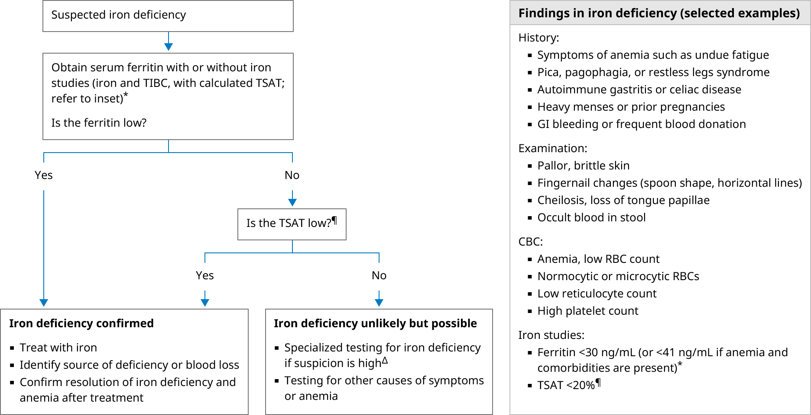

CBC: complete blood count; FH: family history; GI: gastrointestinal; MCH: mean corpuscular hemoglobin; MCV: mean corpuscular volume; RBC: red blood cell; TIBC: total iron binding capacity; TSAT: transferrin saturation.
* A serum ferritin alone may be sufficient for diagnosis in individuals with a high likelihood of iron deficiency (young female with heavy menstrual periods or previous pregnancies). If the ferritin is low, no additional testing is needed. The decision to order a serum ferritin alone or a full iron studies panel depends on the likelihood of iron deficiency and local institutional and laboratory practices such as the ease of "adding on" additional tests to the original sample or obtaining an additional sample if needed.
¶ TSAT is a ratio; it is calculated using the serum iron and total iron binding capacity (TSAT = iron ÷ TIBC × 100), and it can be inaccurate if the serum iron is increased by ingestion of an iron-containing vitamin or iron-rich food before the test. A fasting sample (or avoidance of iron supplements and iron-rich foods) can obviate this problem if needed.
The optimal threshold for TSAT has not been established. Confidence in the diagnosis of iron deficiency is very high if TSAT is <10%; most guidelines cite <20% as the cutoff.
Low TSAT can also be seen in anemia of chronic disease/anemia of inflammation (ACD/AI), as it reflects iron-restricted erythropoiesis. In patients with TSAT <20% and chronic inflammatory conditions, additional laboratory and clinical features should be considered in diagnosing iron deficiency. In otherwise healthy individuals, TSAT <20% is diagnostic of iron deficiency.
Δ For patients with a very strong suspicion of iron deficiency, the soluble transferrin receptor (sTfR) or sTfR-ferritin index may be useful. Bone marrow iron stain is rarely needed. Hematology consultation may be helpful.